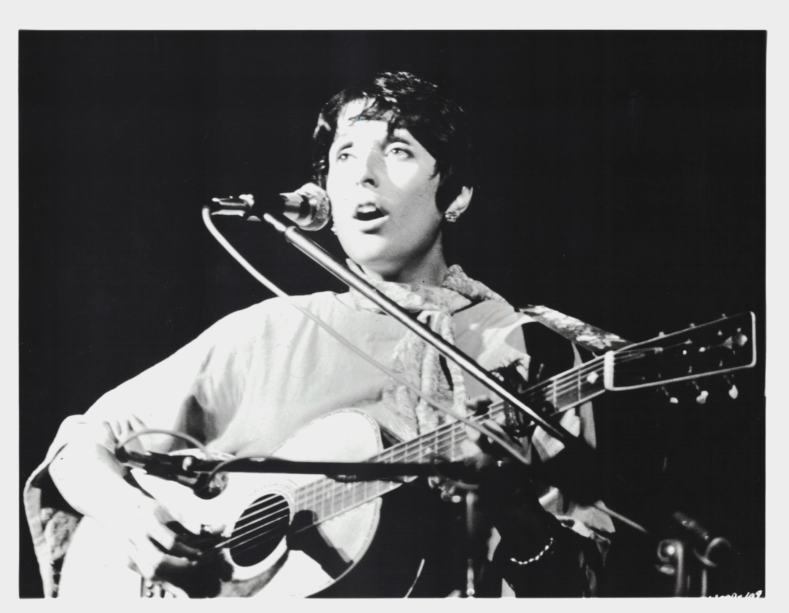

Product No. HEC-0049
$12.99
Shipping: $8.95
Description
8x10 B&W photograph
Full Description
Joan Baez is an American folk singer, songwriter, musician, and activist whose distinctive soprano voice and socially conscious music made her one of the most influential performers of the 1960s folk revival. Born Joan Chandos Baez on January 9, 1941, in Staten Island, New York, she began performing professionally while still a teenager. Baez gained national attention after appearing at the Newport Folk Festival and released her self-titled debut album, "Joan Baez," in 1960. She became known for traditional folk songs, ballads, protest music, and interpretations of songs by contemporary writers. Her best-known recordings include "Diamonds & Rust," "The Night They Drove Old Dixie Down," "We Shall Overcome," and "There But for Fortune." Baez also played an important role in introducing audiences to Bob Dylan, recording several of his songs and performing with him during the early years of his career. Throughout her life, Baez has been closely associated with civil rights, peace, and humanitarian causes. She performed at the 1963 March on Washington and became one of the most recognizable musical voices of the American protest movement. Baez continued recording and touring for decades and was inducted into the Rock and Roll Hall of Fame in 2017. Her combination of folk music, political activism, and cultural influence has made her an enduring figure in American music history and a popular subject among collectors of folk music memorabilia, signed photographs, records, and celebrity autographs.
Condition
Excellent condition